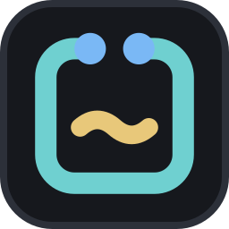
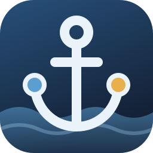

tsumugi
yagura
tsumugi の 2 本の糸（シアンと金）が、海へ伸びる 2 本の防波堤になった。先の灯りのあいだが港の口で、中の静かな水は yagura の青。地の色と縁は 3 つとも同じ（tsumugi Dark の bg と border）。

B: 上から見た岸壁
前の案（錨）アプリでは tsumugi・yagura と同じく、絵を持たずに icon.rs でこの形を描き、build.rs で exe に入れる（線 2 本・波 1 本・点 2 つなので描ける）。